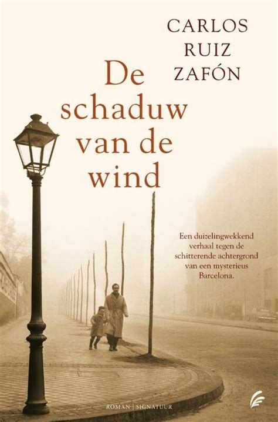
De Schaduw van de Wind
Door: Carlos Ruiz Zafón
In het hart van Barcelona vindt een jongen een geheimzinnig boek dat zijn leven zal veranderen.
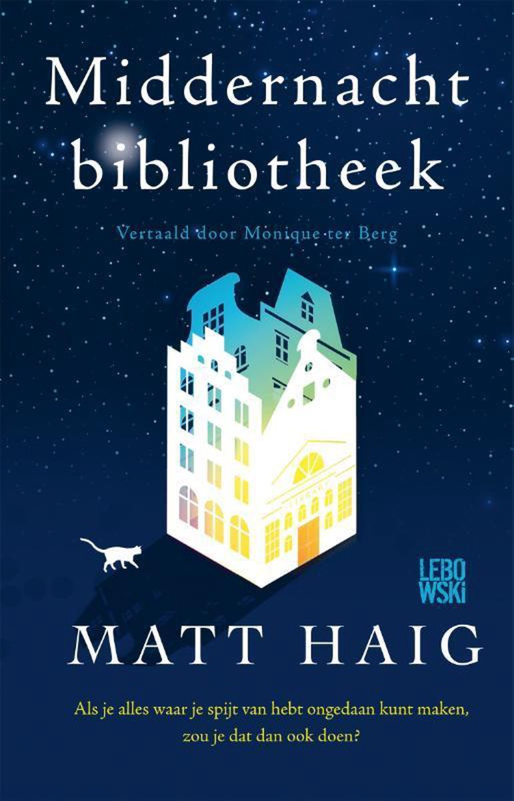
De Middernachtbibliotheek
Door: Matt Haig
Tussen leven en dood is er een bibliotheek met boeken over alle levens die je had kunnen leiden.
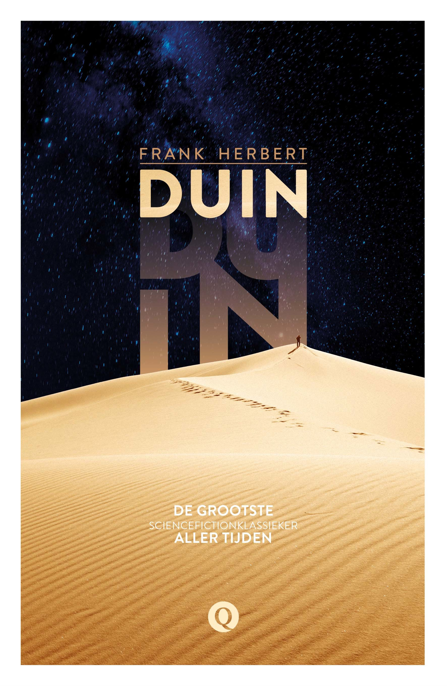
Duin
Door: Frank Herbert
Een episch sciencefiction-meesterwerk over de woestijnplaneet Arrakis en de strijd om de specie.
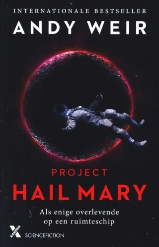
Project Hail Mary
Door: Andy Weir
Een eenzame astronaut moet in zijn eentje de mensheid redden van een extinction-level event.

De Alchemist
Door: Paulo Coelho
De magische reis van de Spaanse schaapherder Santiago op zoek naar een schat bij de piramiden.
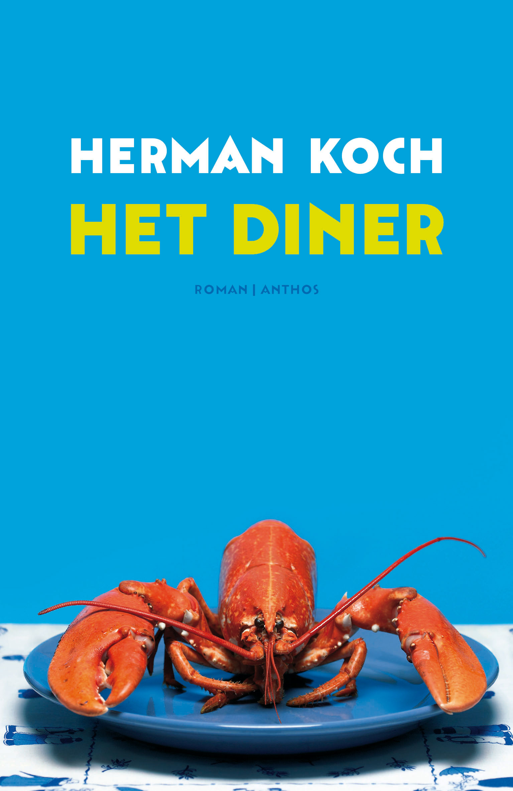
Het Diner
Door: Herman Koch
Twee echtparen gaan chic uit eten. Ondertussen ligt het criminele lot van hun zonen op tafel.
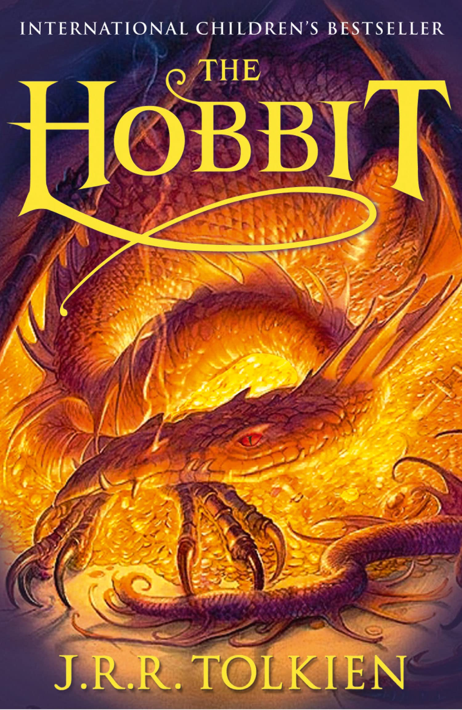
De Hobbit
Door: J.R.R. Tolkien
Bilbo Balings wordt meegesleurd in een avontuur om een schat terug te winnen van de draak Smaug.
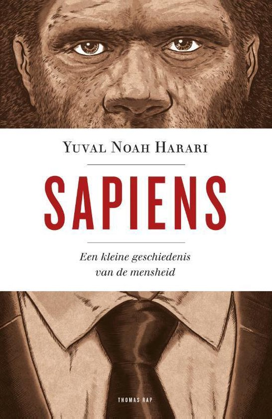
Sapiens
Door: Yuval Noah Harari
Een fascinerende reis door de geschiedenis van de mensheid, van apen tot heersers van de aarde.
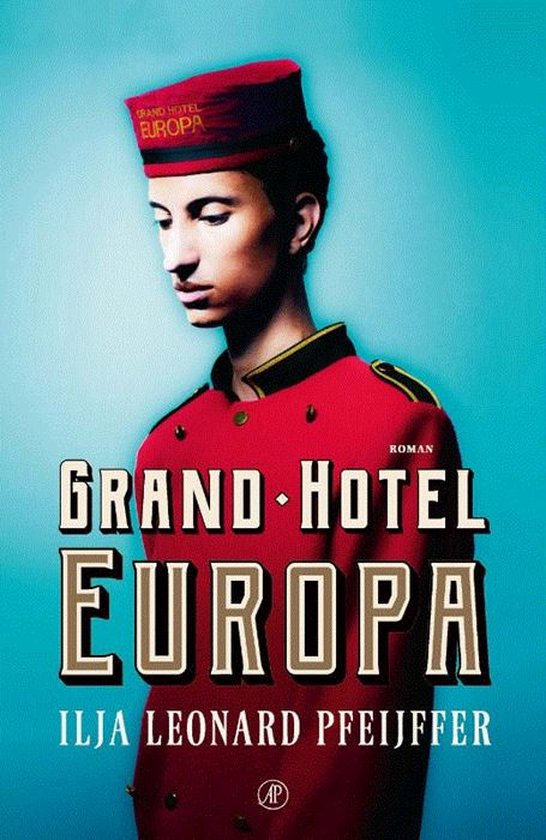
Grand Hotel Europa
Door: Ilja Leonard Pfeijffer
Een meeslepende roman over de identiteit van Europa en de grote impact van het massatoerisme.
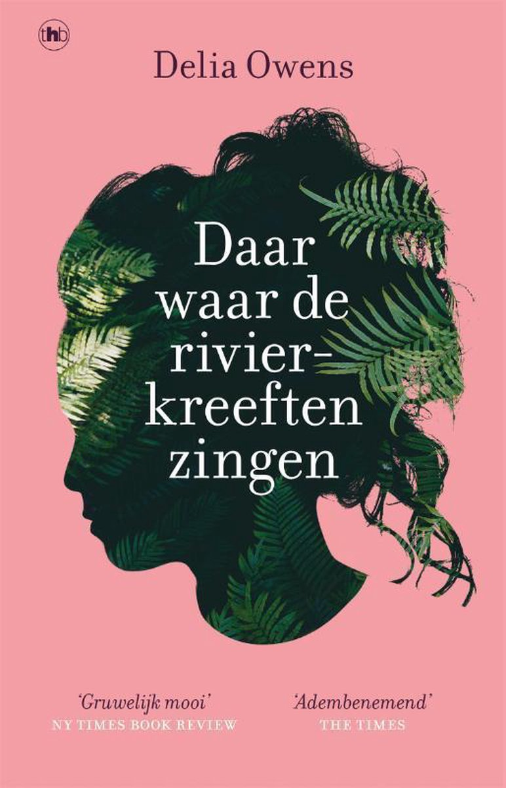
Daar waar de rivierkreeften zingen
Door: Delia Owens
Het moerasmeisje Kya groeit alleen op. Als er een man dood wordt gevonden, is zij de hoofdverdachte.
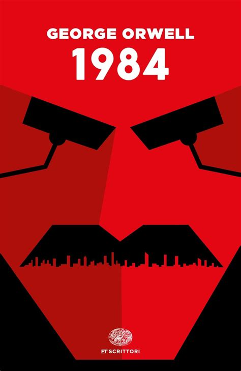
1984
Door: George Orwell
De wereldberoemde dystopie over Big Brother, totale surveillance en de manipulatie van de waarheid.
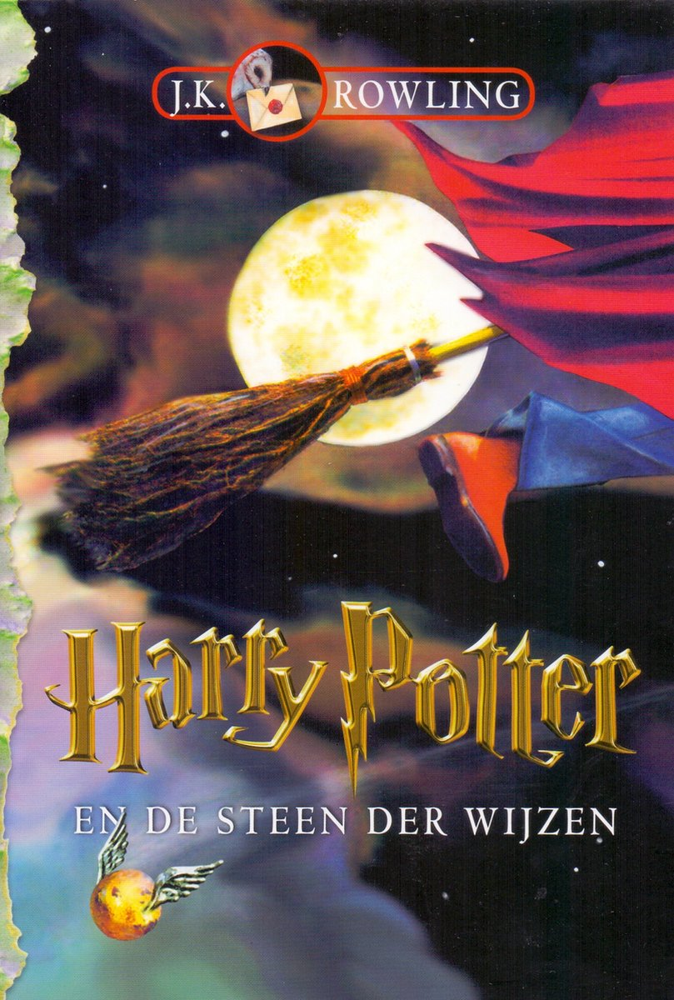
Harry Potter en de Steen der Wijzen
Door: J.K. Rowling
De jonge weesjongen Harry ontdekt dat hij een tovenaar is en mag studeren aan Zweinstein.
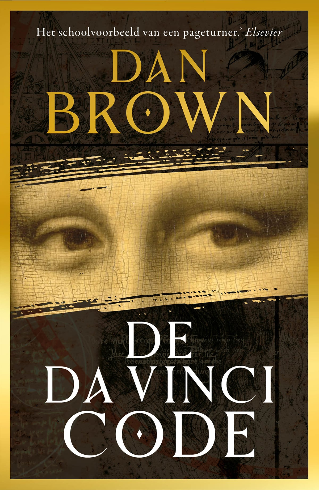
De Da Vinci Code
Door: Dan Brown
Robert Langdon moet een moord in het Louvre oplossen en stuit op een eeuwenoud geheim genootschap.
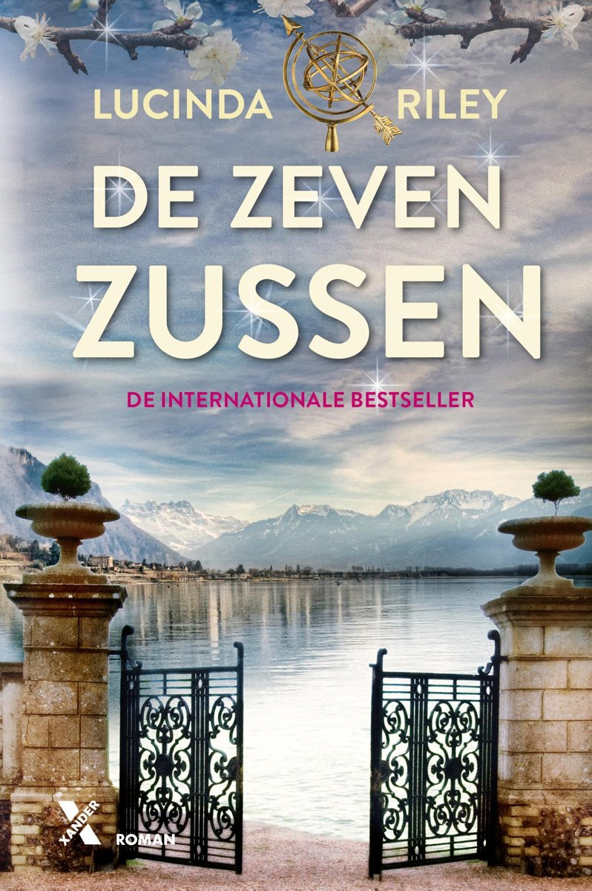
De Zeven Zussen
Door: Lucinda Riley
Na de dood van hun adoptievader komen zussen samen om puzzels over hun afkomst op te lossen.
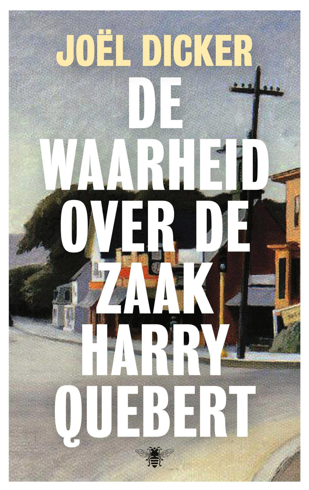
De Waarheid over de zaak Harry Quebert
Door: Joël Dicker
Een jonge schrijver probeert de onschuld te bewijzen van zijn mentor, die beschuldigd wordt van moord.
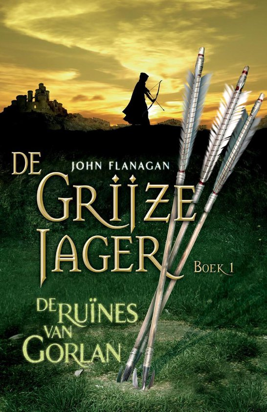
De Grijze Jager: Ruïnes van Gorlan
Door: John Flanagan
Will is klein voor zijn leeftijd, maar wordt gekozen als leerling van de mysterieuze Grijze Jagers.
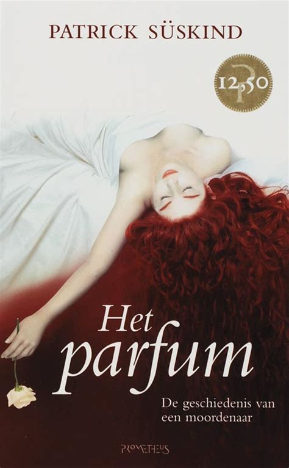
Het Parfum
Door: Patrick Süskind
Jean-Baptiste Grenouille heeft een fenomenale reukzin. Zijn obsessie voor het ultieme parfum drijft hem tot moord.
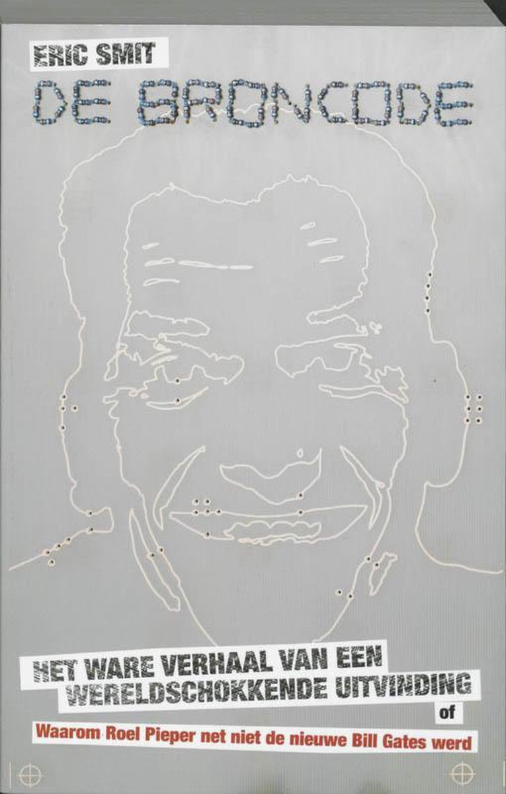
De Broncode
Door: Mark Elsberg
Een hypermoderne technothriller over kunstmatige intelligentie die de wereldwijde systemen overneemt.
Ik kom hier nog op terug
Door: Rob van Essen
Een man krijgt de kans om gemaakte fouten uit zijn studententijd op magische wijze te herstellen.
Schaduw van de Nacht
Door: Deborah Harkness
Wanneer een historica (en onwillige heks) een betoverd manuscript opent, ontwaakt een oude strijd.